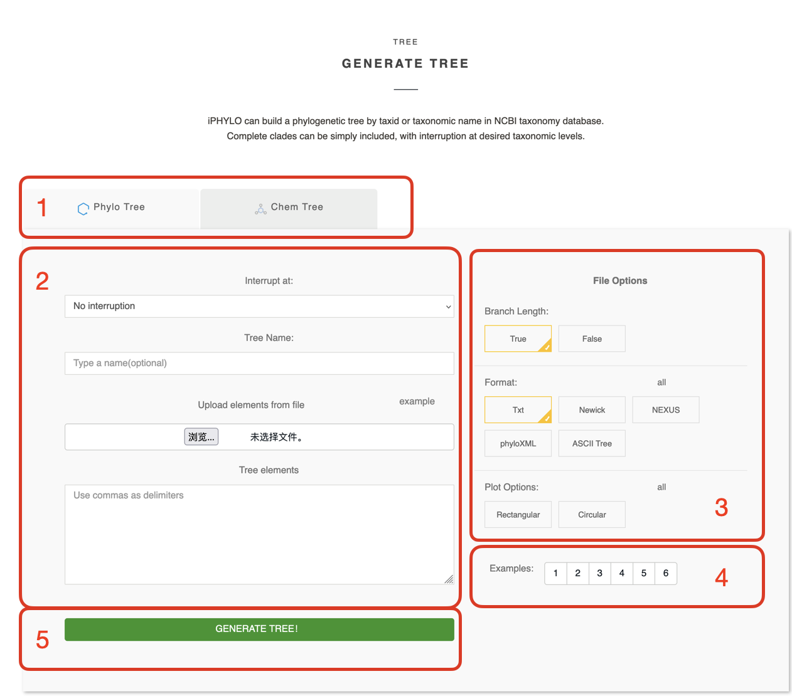

2 iPhylo Tree
iPhylo Tree is an online web application that rapidly generates biological or chemical taxonomic trees for up to tens of thousands of organisms and chemicals within minutes. iPhylo Tree can be accessed via https://www.iphylo.net/tree, or though the Tree button on the iPhylo homepage welcome image or navigation bar.

2.1 Working on the Tree page

You can easily build your tree on through the form on the tree page.
Select the tree type: Switch between the
Phylo TreeandChem Treetabs to choose whether you want to generate a phylogenetic tree or a chemical classification tree.
Specify your tree: Though this section, you can set the tree content and name.
Interrupt at: Choose a level to interrupt your tree. See interrupt
Tree Name: Specify a name for your tree, and the output file will be named accordingly.
Upload elements from file: Arrange your tree elements (taxa or chemicals) in a
.txtfile to upload. This is useful when you need to upload many elements.Tree elements: You can also type the tree elements in this box. If you both upload the file and enter this box, we will generate a tree based on the contents of the file.
- File Options: Specify the options for the output with this section.
Branch Length: Choose whether the generated tree contains branch lengths. See branch length.
Format: Opt to download the result tree in NEXUS, Newick or phyloXML formats. The TXT format is mandatory for download. You can alse choose ASCII Tree to get an ASCII representation of the tree structure. See output.
Plot Options: PDF visualization of the tree structure. See output.
Examples: We have provided 6 examples for biological and chemical trees respectively, which are just a click away to try. Corresponding descriptions are provided below each example input.
Generate Tree: Click this button to submit this form.
2.2 Classification Systems
2.2.1 Phylo Tree
Phylo Tree module builds biological taxonomic trees utilizing the NCBI Taxonomy. This system enables rapid retrieval of lineage information across all domains of life. The Phylo Tree classification uses data recorded in the NCBI Taxonomy database, including TaxID, scientific name, common name, and synonyms. It currently encompasses a total of 2,388,300 TaxIDs.
For more information, please refer to the official link:
NCBI taxonomy database
2.2.2 Chemical Tree
To meet diverse classification needs, we utilize two compound classification systems, ChemOnt and NPClassifier, for chemical taxonomies. Our database includes approximately 800,000 chemical compounds with information on IUPC names, InChiKey, InChI, isomeric SMILES, and taxonomy details.
ChemOnt classifies a large number of chemicals based on their structural features. It uses chemical structures and structural features to automatically assign all known chemical compounds into a taxonomy comprising more than 4,800 different categories.
NPClassifier uses machine learning models to classify natural products beyond simple chemical substructures. This system incorporates factors such as the producing organism, biosynthetic pathways, and their biological properties.
For more information, please consult the official publications: